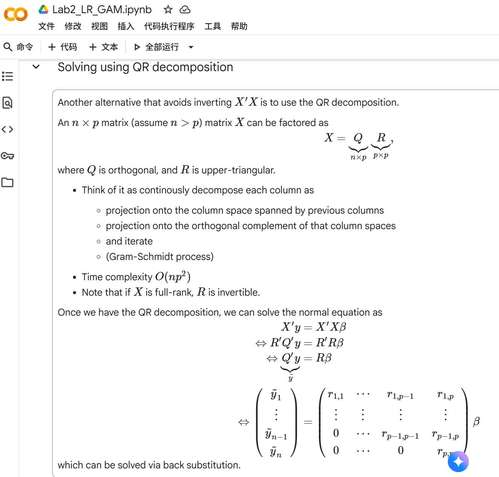

random_walk1 <- function(n) {
position <- 0
for (i in 1:n) {
step <- sample(c(1, 10, -1, -3), 1, prob = c(0.475, 0.025, 0.4, 0.1))
position <- position + step
}
return(position)
}hw2
Information
the Github website for this homework is https://github.com/jiayihu-Jeffery/506hw2
Problem 1 - Modified Random walk
Consider a 1-dimensional random walk with the following rules:
- Start at 0.
- At each step, move +1 or -1 with 50/50 probability.
- If +1 is chosen, 5% of the time move +10 instead.
- If -1 is chosen, 20% of the time move -3 instead.
- Repeat steps 2-4 \(n\) times.
(Note that if the +10 is chosen, it’s not +1 then +10, it is just +10.)
Write a function to determine the end position of this random walk.
The input and output should be:
Input: The number of steps
Output: The final position of the walk
random_walk(10)
[1] 4
random_walk(10)
[1] -11
We’re going to implement this in different ways and compare them.
a.
Implement the random walk in these three versions:
- Version 1: using a loop.
- Version 2: using built-in R vectorized functions. (Using no loops.) (Hint: Does the order of steps matter?)
- Version 3: Implement the random walk using one of the “
apply” functions.
Demonstrate that all versions work by running the following:
random_walk1(10)
random_walk2(10)
random_walk3(10)
random_walk1(1000)
random_walk2(1000)
random_walk3(1000)Version 1: for-loop
We can calculate the overall probability of each of the four possible outcomes:
\[ \begin{aligned} P(+1) &= P(\text{positive direction}) \times P(+1 \mid \text{positive}) = 0.5 \times 0.95 = 0.475 \\ P(+10) &= P(\text{positive direction}) \times P(+10 \mid \text{positive}) = 0.5 \times 0.05 = 0.025 \\ P(-1) &= P(\text{negative direction}) \times P(-1 \mid \text{negative}) = 0.5 \times 0.80 = 0.4 \\ P(-3) &= P(\text{negative direction}) \times P(-3 \mid \text{positive}) = 0.5 \times 0.20 = 0.1 \end{aligned} \]
Version 2: vectorized functions (no loops)
random_walk2 <- function(n) {
#compose all_steps as a vector, [1] indicate the first step we move how far.
all_steps <- sample(c(1, 10, -1, -3),
size = n,
replace = TRUE,
prob = c(0.475, 0.025, 0.4, 0.1))
return(sum(all_steps))
}Version 3: vapply (professor said it’s safest apply function)
random_walk3 <- function(n) {
#parameter 'dummy' is not used, just a placeholder for vapply
step <- function(dummy) {
sample(c(1, 10, -1, -3), 1, prob = c(0.475, 0.025, 0.4, 0.1))
}
# Use vapply to repeat the step function n times
all_steps <- vapply(1:n, step, numeric(1))
sum(all_steps)
}Demonstration
random_walk1(10)[1] 3random_walk2(10)[1] 2random_walk3(10)[1] 2random_walk1(1000)[1] -124random_walk2(1000)[1] -43random_walk3(1000)[1] 27b.
Demonstrate that the three versions can give the same result.Show this for both n=10 and n=1000. (You will need to add a way to control the randomization.)
# using setseed to control the randomization
set.seed(1); random_walk1(10)[1] -8set.seed(1); random_walk2(10)[1] -8set.seed(1); random_walk3(10)[1] -8set.seed(1); random_walk1(1000)[1] 50set.seed(1); random_walk2(1000)[1] 50set.seed(1); random_walk3(1000)[1] 50c.
Use the microbenchmark package to clearly demonstrate the speed of the implementations.Compare performance with a low input (1,000) and a large input (100,000). Discuss the results.
library(microbenchmark)
library(ggplot2)
# Compare performance for n = 1,000
mb_small <- microbenchmark(
loop = random_walk1(1000),
vector = random_walk2(1000),
vapply_fn = random_walk3(1000),
times = 100
)
# change 100 times to 20 times for n = 100,000 to reduce computation time
mb_large <- microbenchmark(
loop = random_walk1(100000),
vector = random_walk2(100000),
vapply_fn = random_walk3(100000),
times = 20
)
print(mb_small)Unit: microseconds
expr min lq mean median uq max neval
loop 2880.901 3075.3010 3441.66392 3317.352 3521.6015 5285.101 100
vector 15.400 18.9005 21.48904 20.901 23.5015 30.101 100
vapply_fn 3312.601 3531.2510 3981.35801 3847.550 4048.8010 8152.601 100print(mb_large)Unit: milliseconds
expr min lq mean median uq max
loop 326.776801 335.251351 352.284091 340.095951 347.955151 557.048401
vector 1.209402 1.362702 1.487246 1.404051 1.512501 2.295601
vapply_fn 372.795401 380.407151 393.120446 387.138251 397.029651 444.497001
neval
20
20
20autoplot(mb_small)Warning: `aes_string()` was deprecated in ggplot2 3.0.0.
ℹ Please use tidy evaluation idioms with `aes()`.
ℹ See also `vignette("ggplot2-in-packages")` for more information.
ℹ The deprecated feature was likely used in the microbenchmark package.
Please report the issue at
<https://github.com/joshuaulrich/microbenchmark/issues/>.
autoplot(mb_large)
d.
What is the probability that the random walk ends at 0 if the number of steps is 10? 100? 1000? Defend your answers with evidence based upon a Monte Carlo simulation.
#set MCMC times
n <- 100000
#use random_walk2 for MCMC simulation
random_walk2_MCMC10 <- replicate(n, random_walk2(10))
random_walk2_MCMC100 <- replicate(n, random_walk2(100))
random_walk2_MCMC1000 <- replicate(n, random_walk2(1000))
#calculate the probability
Prob10 = sum(random_walk2_MCMC10 == 0) /n
Prob100 = sum(random_walk2_MCMC100 == 0) /n
Prob1000 = sum(random_walk2_MCMC1000 == 0) /n
print(Prob10)[1] 0.13035print(Prob100)[1] 0.01939print(Prob1000)[1] 0.00573Problem 2 - Mean of Mixture of Distributions
The number of cars passing an intersection is a classic example of a Poisson distribution. At a particular intersection, Poisson is an appropriate distribution most of the time, but during rush hours (hours of 8am and 5pm) the distribution is really normally distributed with a much higher mean.
Using a Monte Carlo simulation, estimate the average number of cars that pass an intersection under the following assumptions:
- From midnight until 7 AM, the distribution of cars per hour is Poisson with mean 1.
- From 9am to 4pm, the distribution of cars per hour is Poisson with mean 8.
- From 6pm to 11pm, the distribution of cars per hour is Poisson with mean 12.
- During rush hours (8am and 5pm), the distribution of cars per hour is Normal with mean 60 and variance 12
Accomplish this without using any loops.
(Hint: This can be done with extremely minimal code.)
M <- 1000000
sigma_rush <- sqrt(12)
# Create a matrix where each row is a day and each column is an hour
X <- cbind(
matrix(rpois(M * 8, 1), M, 8),# 0–7h, first creat a vectir of 8M elements, then convert it to a M*8 matrix
round(pmax(0, rnorm(M, 60, sigma_rush))), # 8h, round and pmax to ensure non-negative integers
matrix(rpois(M * 8, 8), M, 8),# 9–16h
round(pmax(0, rnorm(M, 60, sigma_rush))), # 17h
matrix(rpois(M * 6, 12), M, 6) # 18–23h
)
head(X) [,1] [,2] [,3] [,4] [,5] [,6] [,7] [,8] [,9] [,10] [,11] [,12] [,13] [,14]
[1,] 0 1 2 2 1 0 2 2 59 5 6 19 5 7
[2,] 1 1 1 0 1 0 1 3 59 9 10 6 6 7
[3,] 0 2 2 0 0 1 0 1 63 7 3 6 4 6
[4,] 0 1 0 0 0 1 1 0 62 13 5 8 10 7
[5,] 0 1 4 1 1 1 1 0 59 10 15 11 5 11
[6,] 1 0 0 1 0 1 1 1 64 4 4 11 8 4
[,15] [,16] [,17] [,18] [,19] [,20] [,21] [,22] [,23] [,24]
[1,] 8 11 8 67 12 12 14 9 9 12
[2,] 6 10 12 62 16 18 13 14 7 12
[3,] 3 7 8 56 12 9 8 14 16 5
[4,] 7 11 15 62 7 14 11 13 12 11
[5,] 5 5 7 54 12 9 7 10 10 15
[6,] 8 8 8 67 10 13 8 9 9 14# Sum across each row to get total cars per day
daily_totals <- rowSums(X)
# Calculate the mean number of cars per day out of M days
mean(daily_totals)[1] 263.9916Problem 3 - Linear Regression
Use the following code to download the YouTube Superbowl commercials data:
youtube <- read.csv('https://raw.githubusercontent.com/rfordatascience/tidytuesday/master/data/2021/2021-03-02/youtube.csv')Information about this data can be found at https://github.com/rfordatascience/tidytuesday/tree/main/data/2021/2021-03-02. The research question for this project is to decide which of several attributes, if any, is associated with increased YouTube engagement metrics.
a.
Often in data analysis, we need to de-identify it. This is more important for studies of people, but let’s carry it out here. Remove any column that might uniquely identify a commercial. This includes but isn’t limited to things like brand, any URLs, the YouTube channel, or when it was published.
Report the dimensions of the data after removing these columns.
youtube <- read.csv(
"https://raw.githubusercontent.com/rfordatascience/tidytuesday/master/data/2021/2021-03-02/youtube.csv"
)
#names(youtube)
# Remove identifying columns
youtube_deid <- subset(
youtube,
select = -c(
brand, # brand name, directly reveals ad identity
superbowl_ads_dot_com_url, # unique URL to original ad page
youtube_url, # unique YouTube video link
id, # unique YouTube video identifier
published_at, # exact publish time, can identify ad
title, # ad title, usually unique
description, # ad description, often unique
thumbnail, # thumbnail URL, can uniquely identify video
channel_title # YouTube channel name, links to advertiser
)
)
#head(youtube_deid)
dim(youtube_deid)[1] 247 16b.
For each of the following variables, examine their distribution. Determine whether i) The variable could be used as is as the outcome in a linear regression model, ii) The variable can use a transformation prior to being used as the outcome in a linear regression model, or iii) The variable would not be appropriate to use as the outcome in a linear regression model.
For each variable, report which category it falls in. If it requires a transformation, carry such a transformation out and use that transformation going forward.
- View counts
- Like counts
- Dislike counts
- Favorite counts
- Comment counts
(Hint: At least the majority of these variables are appropriate to use.)
we first draw the histograms of these variables to examine their distributions.
#we first draw the histograms of these variables to examine their distributions.
library(ggplot2)
library(patchwork)
# Variables to check
vars <- c("view_count", "like_count", "dislike_count", "favorite_count", "comment_count")
# Create histograms for each variable
plots <- lapply(vars, function(v) {
ggplot(youtube, aes_string(x = v)) +
geom_histogram(bins = 30, fill = "steelblue", color = "white") +
scale_x_continuous(labels = scales::comma) +
labs(title = v, x = NULL, y = "Frequency") +
theme_minimal()
})
# Combine plots into a grid
final_plot <- wrap_plots(plots, ncol = 3, nrow = 2) +
plot_annotation(
title = "Distributions of YouTube Engagement Metrics",
theme = theme(plot.title = element_text(hjust = 0.5, face = "bold"))
)
final_plotWarning: Removed 16 rows containing non-finite outside the scale range
(`stat_bin()`).Warning: Removed 22 rows containing non-finite outside the scale range (`stat_bin()`).
Removed 22 rows containing non-finite outside the scale range (`stat_bin()`).Warning: Removed 16 rows containing non-finite outside the scale range
(`stat_bin()`).Warning: Removed 25 rows containing non-finite outside the scale range
(`stat_bin()`).
we then change the x_limits to get a better plot
#we then change the x_limits to get a better plot
x_limits <- list(
c(0, 250000), # view_count
c(0, 1000), # like_count
c(0, 50), # dislike_count
NULL, # favorite_count
c(0, 100) # comment_count
)
plots_zoom <- lapply(seq_along(vars), function(i) {
v <- vars[i]
lims <- x_limits[[i]]
p <- ggplot(youtube, aes_string(x = v)) +
geom_histogram(bins = 30, fill = "steelblue", color = "white")
if (!is.null(lims)) {
p <- p + scale_x_continuous(limits = lims, labels = scales::comma)
title_range <- paste0(" (", format(lims[1], big.mark = ","), "-", format(lims[2], big.mark = ","), ")")
} else {
title_range <- " (full range)"
}
p +
labs(title = paste0(v, title_range),
x = NULL, y = "Frequency") +
theme_minimal()
})
#
final_zoom_plot <- wrap_plots(plots_zoom, ncol = 3, nrow = 2) +
plot_annotation(
title = "Zoomed-in Distributions (Custom Ranges)",
theme = theme(plot.title = element_text(hjust = 0.5, face = "bold"))
)
final_zoom_plotWarning: Removed 59 rows containing non-finite outside the scale range
(`stat_bin()`).Warning: Removed 2 rows containing missing values or values outside the scale range
(`geom_bar()`).Warning: Removed 62 rows containing non-finite outside the scale range
(`stat_bin()`).Warning: Removed 2 rows containing missing values or values outside the scale range
(`geom_bar()`).Warning: Removed 66 rows containing non-finite outside the scale range
(`stat_bin()`).Warning: Removed 2 rows containing missing values or values outside the scale range
(`geom_bar()`).Warning: Removed 16 rows containing non-finite outside the scale range
(`stat_bin()`).Warning: Removed 61 rows containing non-finite outside the scale range
(`stat_bin()`).Warning: Removed 2 rows containing missing values or values outside the scale range
(`geom_bar()`).
library(dplyr)
Attaching package: 'dplyr'The following objects are masked from 'package:stats':
filter, lagThe following objects are masked from 'package:base':
intersect, setdiff, setequal, union# Based on the histograms (full range and zoomed-in):
# 1. View counts: Highly right-skewed, large range -> (ii) Needs transformation
# 2. Like counts: Highly right-skewed, large range -> (ii) Needs transformation
# 3. Dislike counts: Right-skewed, many zeros -> (ii) Needs transformation
# 4. Favorite counts: Constant (all zero) -> (iii) Not appropriate
# 5. Comment counts: Right-skewed, many zeros -> (ii) Needs transformation
# ---- Apply transformations going forward ----
youtube_deid <- youtube_deid %>%
mutate(
# log1p(x) = log(1 + x) handles zeros safely
log_views = log1p(view_count), # (ii) Transform
log_likes = log1p(like_count), # (ii) Transform
log_dislikes = log1p(dislike_count), # (ii) Transform
log_comments = log1p(comment_count) # (ii) Transform
# favorite_count is excluded from modeling as outcome (iii)
)
# ---- Final classification table ----
classification <- data.frame(
Variable = c("View counts", "Like counts", "Dislike counts", "Favorite counts", "Comment counts"),
Category = c(
"ii) Needs transformation",
"ii) Needs transformation",
"ii) Needs transformation",
"iii) Not appropriate",
"ii) Needs transformation"
),
Transformation = c(
"log1p(view_count)",
"log1p(like_count)",
"log1p(dislike_count)",
"N/A (constant)",
"log1p(comment_count)"
)
)
print(classification) Variable Category Transformation
1 View counts ii) Needs transformation log1p(view_count)
2 Like counts ii) Needs transformation log1p(like_count)
3 Dislike counts ii) Needs transformation log1p(dislike_count)
4 Favorite counts iii) Not appropriate N/A (constant)
5 Comment counts ii) Needs transformation log1p(comment_count)c.
For each variable in part b. that are appropriate, fit a linear regression model predicting them based upon each of the seven binary flags for characteristics of the ads, such as whether it is funny. Control for year as a continuous covariate.
Discuss the results. Identify the direction of any statistically significant results.
# Define the predictor variables
predictors <- c("funny", "show_product_quickly", "patriotic",
"celebrity", "danger", "animals", "use_sex", "year")
# define the outcome variables
outcomes <- c("log_views", "log_likes", "log_dislikes", "log_comments")
# Fit model
models <- lapply(outcomes, function(outcome) {
formula <- as.formula(
paste(outcome, "~", paste(predictors, collapse = " + "))
)
lm(formula, data = youtube_deid)
})
# Name the list for clarity
names(models) <- outcomes
lapply(models, summary)$log_views
Call:
lm(formula = formula, data = youtube_deid)
Residuals:
Min 1Q Median 3Q Max
-7.7742 -1.6152 0.1311 1.7036 8.4481
Coefficients:
Estimate Std. Error t value Pr(>|t|)
(Intercept) -31.55016 71.00538 -0.444 0.657
funnyTRUE 0.56492 0.46702 1.210 0.228
show_product_quicklyTRUE 0.21089 0.40530 0.520 0.603
patrioticTRUE 0.50699 0.53811 0.942 0.347
celebrityTRUE 0.03548 0.42228 0.084 0.933
dangerTRUE 0.63131 0.41812 1.510 0.132
animalsTRUE -0.31002 0.39348 -0.788 0.432
use_sexTRUE -0.38671 0.44782 -0.864 0.389
year 0.02053 0.03531 0.582 0.561
Residual standard error: 2.787 on 222 degrees of freedom
(16 observations deleted due to missingness)
Multiple R-squared: 0.02694, Adjusted R-squared: -0.008122
F-statistic: 0.7684 on 8 and 222 DF, p-value: 0.631
$log_likes
Call:
lm(formula = formula, data = youtube_deid)
Residuals:
Min 1Q Median 3Q Max
-5.2860 -1.6333 0.0868 1.4911 7.7431
Coefficients:
Estimate Std. Error t value Pr(>|t|)
(Intercept) -150.51357 63.45723 -2.372 0.0186 *
funnyTRUE 0.47476 0.41816 1.135 0.2575
show_product_quicklyTRUE 0.20017 0.36391 0.550 0.5828
patrioticTRUE 0.80689 0.49791 1.621 0.1066
celebrityTRUE 0.41283 0.38212 1.080 0.2812
dangerTRUE 0.63895 0.37350 1.711 0.0886 .
animalsTRUE -0.05944 0.35298 -0.168 0.8664
use_sexTRUE -0.42952 0.40064 -1.072 0.2849
year 0.07685 0.03155 2.436 0.0157 *
---
Signif. codes: 0 '***' 0.001 '**' 0.01 '*' 0.05 '.' 0.1 ' ' 1
Residual standard error: 2.467 on 216 degrees of freedom
(22 observations deleted due to missingness)
Multiple R-squared: 0.07313, Adjusted R-squared: 0.03881
F-statistic: 2.13 on 8 and 216 DF, p-value: 0.0342
$log_dislikes
Call:
lm(formula = formula, data = youtube_deid)
Residuals:
Min 1Q Median 3Q Max
-4.0292 -1.3299 -0.3192 0.8986 8.7219
Coefficients:
Estimate Std. Error t value Pr(>|t|)
(Intercept) -183.06813 53.34768 -3.432 0.000719 ***
funnyTRUE 0.25949 0.35154 0.738 0.461224
show_product_quicklyTRUE 0.27511 0.30593 0.899 0.369515
patrioticTRUE 0.81407 0.41859 1.945 0.053095 .
celebrityTRUE -0.20214 0.32125 -0.629 0.529852
dangerTRUE 0.22184 0.31400 0.707 0.480630
animalsTRUE -0.21192 0.29675 -0.714 0.475911
use_sexTRUE -0.32980 0.33681 -0.979 0.328583
year 0.09207 0.02653 3.471 0.000626 ***
---
Signif. codes: 0 '***' 0.001 '**' 0.01 '*' 0.05 '.' 0.1 ' ' 1
Residual standard error: 2.074 on 216 degrees of freedom
(22 observations deleted due to missingness)
Multiple R-squared: 0.09753, Adjusted R-squared: 0.06411
F-statistic: 2.918 on 8 and 216 DF, p-value: 0.004115
$log_comments
Call:
lm(formula = formula, data = youtube_deid)
Residuals:
Min 1Q Median 3Q Max
-4.1372 -1.4665 -0.1427 1.4061 5.8468
Coefficients:
Estimate Std. Error t value Pr(>|t|)
(Intercept) -99.09835 52.92351 -1.872 0.0625 .
funnyTRUE 0.21954 0.34528 0.636 0.5256
show_product_quicklyTRUE 0.40939 0.30229 1.354 0.1771
patrioticTRUE 0.66698 0.39902 1.672 0.0961 .
celebrityTRUE 0.29767 0.31541 0.944 0.3464
dangerTRUE 0.17784 0.31069 0.572 0.5677
animalsTRUE -0.26802 0.29347 -0.913 0.3621
use_sexTRUE -0.39323 0.33163 -1.186 0.2370
year 0.05034 0.02632 1.913 0.0571 .
---
Signif. codes: 0 '***' 0.001 '**' 0.01 '*' 0.05 '.' 0.1 ' ' 1
Residual standard error: 2.039 on 213 degrees of freedom
(25 observations deleted due to missingness)
Multiple R-squared: 0.06535, Adjusted R-squared: 0.03025
F-statistic: 1.862 on 8 and 213 DF, p-value: 0.06748Discussion of Results (based on model summaries above):
# Discussion of Results (based on model summaries above):
# 1. log_views:
# - No predictors statistically significant at p < 0.05.
# - Conclusion: Neither year nor ad characteristics explain
# variation in view counts after transformation.
#
# 2. log_likes:
# - year: Positive, significant (Estimate ≈ 0.07685, p ≈ 0.0157)
# - Conclusion: Likes have increased in more recent years,
# controlling for ad features.
#
# 3. log_dislikes:
# - year: Positive, significant (Estimate ≈ 0.09207, p ≈ 0.000626)
# - patriotic: Positive, marginal (p ≈ 0.0531)
# - Conclusion: Dislikes have increased over time; patriotic ads
# may receive slightly more dislikes (weak evidence).
#
# 4. log_comments:
# - No predictors significant at p < 0.05.
# - year: Positive, marginal (p ≈ 0.0571)
# - Conclusion: Weak evidence that comments have increased over time.
#
# Overall:
# - Year is the most consistent predictor, positively associated
# with likes, dislikes, and marginally comments.
# - No ad characteristic shows strong, consistent significance.d.
Consider only the outcome of view counts. Calculate \(\hat{\beta}\) manually (without using lm) by first creating a proper design matrix, then using matrix algebra to estimate \(\beta\). Confirm that you get the same result as lm did in part c.
In this problem, I applied the QR decomposition method learned in STATS 600, Lab 2.
This approach offers two significant advantages over the standard normal equation method, which relies on calculating $(X^T X)^{-1}$:
Improved Computational Efficiency: The complexity is reduced from $O(p^3)$ to $O(np^2)$, making it much faster for datasets with many predictors.
Enhanced Numerical Stability: It avoids the explicit calculation of $(X^T X)^{-1}$, which can be inaccurate or fail completely if the matrix is ill-conditioned (i.e., has high multicollinearity).
# define variables
response_var <- "log_views"
predictor_vars <- c("funny", "show_product_quickly", "patriotic",
"celebrity", "danger", "animals", "use_sex", "year")
all_model_vars <- c(response_var, predictor_vars)
# using na.omit to remove rows with any NA in the relevant columns
youtube_clean <- na.omit(youtube_deid[, all_model_vars])
y <- youtube_clean$log_views
X <- as.matrix(cbind(intercept = 1, youtube_clean[, predictor_vars]))
# using QR decomposition to solve for beta_hat
qr_decomposition <- qr(X)
Q <- qr.Q(qr_decomposition)
R <- qr.R(qr_decomposition)
# Calculate beta_hat using the QR components
beta_hat_qr <- solve(R) %*% t(Q) %*% y
# Compare with lm results
results <- cbind(
Manual_QR = beta_hat_qr,
LM_Function = coef(models$log_views)
)
print(results) LM_Function
intercept -31.55015804 -31.55015804
funny 0.56492445 0.56492445
show_product_quickly 0.21088918 0.21088918
patriotic 0.50699051 0.50699051
celebrity 0.03547862 0.03547862
danger 0.63131085 0.63131085
animals -0.31001838 -0.31001838
use_sex -0.38670726 -0.38670726
year 0.02053399 0.02053399